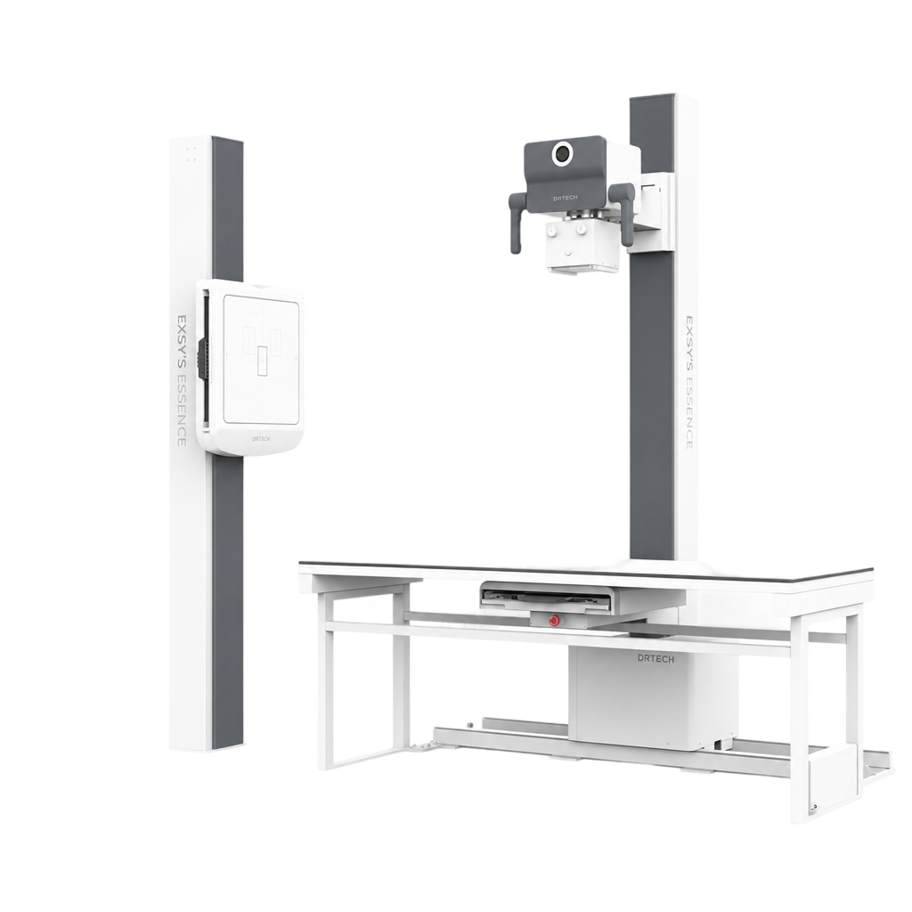
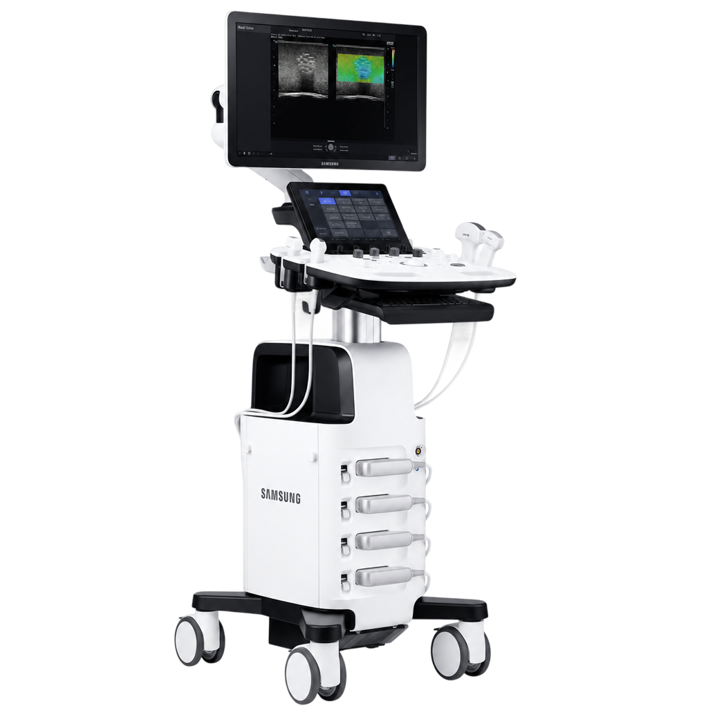
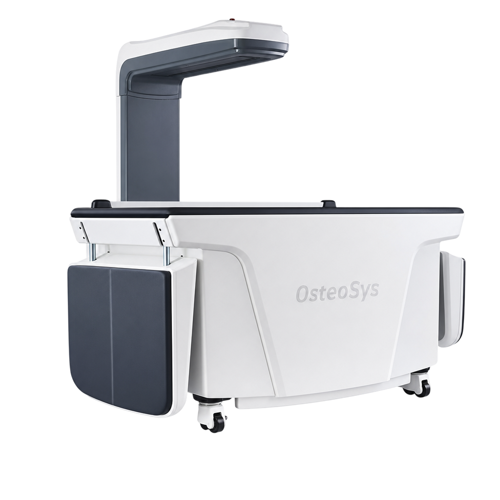
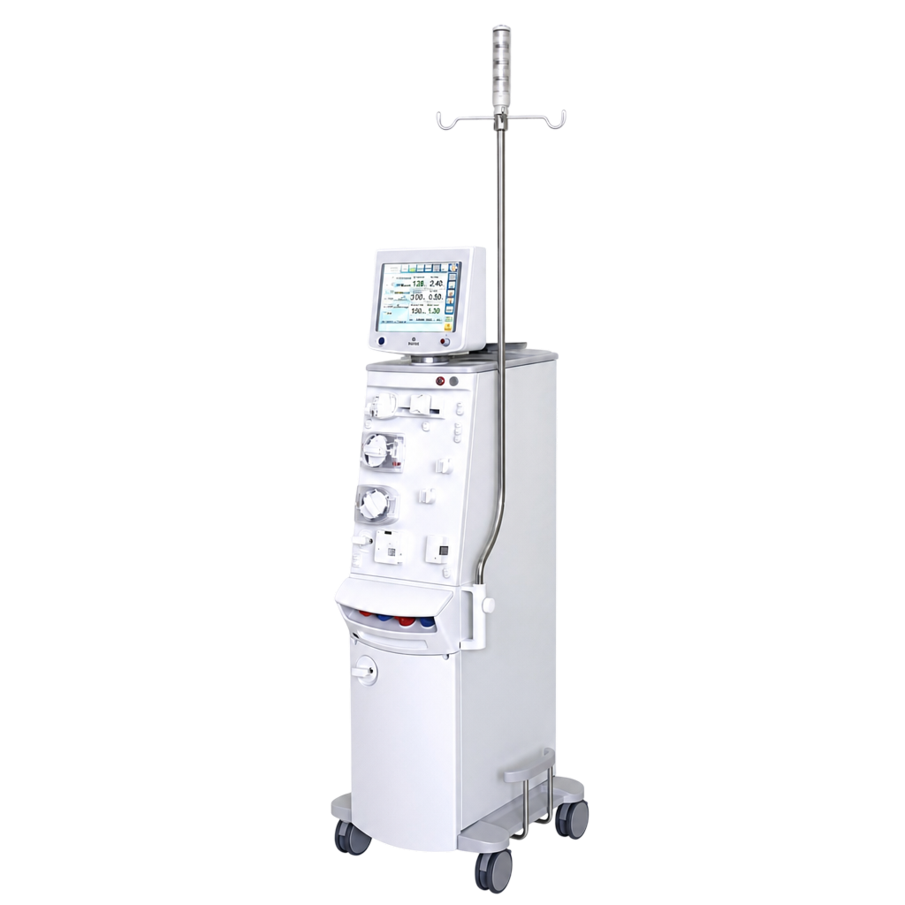

디지털 X-ray ESSENCE 5
디알텍 · 저선량 정밀 영상으로 안전한 진단이 가능합니다.
병원소개
내과 진료부터 인공신장실 투석까지, 같은 마음으로 평생을 함께합니다.
강서성모맑은내과의원은 단순히 만성질환을 관리하는 곳이 아니라,
환자분의 건강한 일상을 함께 만들어가는 동반자입니다.

Doctor

신장 투석과 소화기내시경 분야에서 풍부한 임상경험을 바탕으로,
환자분 한 분 한 분께 가장 적합한 진료 방향을 설계해드립니다.
보유 의료장비
최신 장비와 정확한 진단으로 과잉 진단 없이 꼭 필요한 진료만을 신중히 안내합니다.

디알텍 · 저선량 정밀 영상으로 안전한 진단이 가능합니다.

삼성메디슨 · 고해상도 영상으로 복부·갑상선·신장 상태를 평가합니다.

오스테오시스 · 골다공증 진단·예방을 위한 정밀 골밀도 평가입니다.

Nipro · 정밀한 투석 모니터링과 안정적인 치료 환경을 제공합니다.